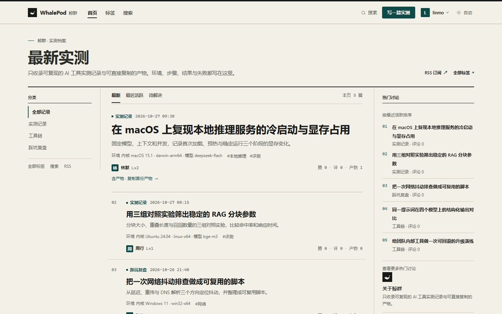

邀请制账号
GitHub OAuth 代码、邀请激活、开发登录、账号状态、头像与注销。Cookie 会话 + CSRF。

What ships
从内容生产、审核治理到可验证设备身份，按一个完整社区的最小闭环交付。
GitHub OAuth 代码、邀请激活、开发登录、账号状态、头像与注销。Cookie 会话 + CSRF。
板块、标签、帖子、评论、Markdown 清洗、图片重编码、产物复制、点赞与采纳。
人工审核队列、举报、申诉、敏感词策略、只读模式、审计与系统健康。
Ed25519 challenge 与 Device CLI，设备徽章、撤销与管理员设备历史。
Agent API 与 stdio MCP 默认关闭；只建议、人工裁决，支持预算、熔断与最小 scope。
RSS/Sitemap/SEO、中文搜索、健康检查、结构化日志、备份脚本与后台管理。
Runtime
浏览器访问静态 SSR 页面；写操作走同源 API。后台 worker 只在 API 进程运行。
Documentation
交付文档已经收敛到 v0.1.0；详细行为以 SRS 和 API 契约为准。
Release
Web/API 为 linux-x64 包；Device CLI 提供三平台自包含单文件。产物由 GitHub Release 发布。